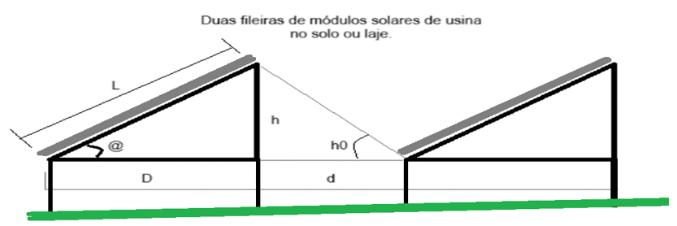

<h1>Sistemas Fotovoltaicos.</h1><hr><br>

<h2> Entenda melhor como dimensionar sistemas fotovoltaicos e depois divirta-se com o aplicativo.</h2>

<!--<div class="video">
	<media><iframe width="100%" height="315" src="https://www.youtube.com/embed/06AglkO9VHo?si=XyuxcjTgl_Q9cUT-" title="YouTube video player" frameborder="0" allow="accelerometer; autoplay; clipboard-write; encrypted-media; gyroscope; picture-in-picture; web-share" referrerpolicy="strict-origin-when-cross-origin" allowfullscreen></iframe></media></div>
	<br><hr><br>-->

<h2>Dimensione seu Sistema Fotovoltaico On_Grid ou Grid Tie (SFVCR).</h2><hr><br>


<form action="">

	<fieldset>
		<legend>Nome da usina.</legend>
		<input type="text" name="nCircf" id="nCircf" value="Minha usina">
	</fieldset>
	<br><br>
	<fieldset>
		<legend>Insira a irradiação solar diária média mensal - Plano
			Horizontal (kWh/m².dia)</legend>
		<input type="number" name="nIrr" id="nIrr" value="5">
		<br><hr>
		<h3>Para descobrir a irradiação solar diária média mensal - Plano
			horizontal (kWh/m².dia) entre no site do <a
			href="http://www.cresesb.cepel.br/index.php?section=sundata"
			target="_blank">CRESESB</a> e insira as
			coordenadas geográfica da residência, que podem ser encontradas no <a
			href="https://earth.google.com/web/@-22.836362,-43.75645254,31.97815429a,107815.33906907d,23.07019913y,143.48167669h,42.10022882t,360r/data=OgMKATA"
			target="_blank">GOOGLE EARTH</a>.</h3><hr>
		
	</fieldset><br>
	
		<fieldset>
			<legend>Insira o consumo dos ultimos 13 meses.</legend>
			<label for="nMes1">Mês 01 &nbsp;</label><input type="number" name="nMes1"
				id="nMes1" value="200"><br><br>
			<label for="nMes2">Mês 02 &nbsp;</label><input type="number" name="nMes2"
				id="nMes2"  value="200"><br><br>
			<label for="nMes3">Mês 03 &nbsp;</label><input type="number" name="nMes3"
				id="nMes3"  value="200"><br><br>
			<label for="nMes4">Mês 04 &nbsp;</label><input type="number" name="nMes4"
				id="nMes4"  value="200"><br><br>
			<label for="nMes5">Mês 05 &nbsp;</label><input type="number" name="nMes5"
				id="nMes5"  value="200"><br><br>
			<label for="nMes6">Mês 06 &nbsp;</label><input type="number" name="nMes6"
				id="nMes6"  value="200"><br><br>
			<label for="nMes7">Mês 07 &nbsp;</label><input type="number" name="nMes7"
				id="nMes7"  value="200"><br><br>
			<label for="nMes8">Mês 08 &nbsp;</label><input type="number" name="nMes8"
				id="nMes8"  value="200"><br><br>
			<label for="nMes9">Mês 09 &nbsp;</label><input type="number" name="nMes9"
				id="nMes9"  value="200"><br><br>
			<label for="nMes10">Mês 10 &nbsp;</label><input type="number"
				name="nMes10" id="nMes10"  value="200"><br><br>
			<label for="nMes11">Mês 11 &nbsp;</label><input type="number"
				name="nMes11" id="nMes11" value="200"><br><br>
			<label for="nMes12">Mês 12 &nbsp;</label><input type="number"
				name="nMes12" id="nMes12" value="200"><br><br>
				<label for="nMes13">Mês 13 &nbsp;</label><input type="number"
				name="nMes13" id="nMes13" value="200"><br><br>
			<label for="nMes14">Acréscimo de &nbsp;&nbsp;<input
				type="number"
				name="nMes14" id="nMes14" value="200">kWh.mês, à media mensal. </label><br>
		</fieldset>
		<br><br>

		<fieldset>
			<legend>Indique sua escolha referente a TUSD.</legend>
			<label for="npad">Tipo do padrão </label>&nbsp;<br>
				<input type="radio" name="npad" id="npad1" value="4" checked><label>&nbsp; Manter TUSD</label><br>
				<input type="radio" name="npad" id="npad2" value="1"><label>&nbsp; Monofásico</label><br>
				<input type="radio" name="npad" id="npad3" value="2"><label>&nbsp; Bifásico</label><br>
				<input type="radio" name="npad" id="npad4" value="3"><label>&nbsp; Trifásico</label><br>				
		</fieldset>
		<br><br>

		<fieldset>
			<legend> Insira os dados do módulo comercial</legend>
			<label for="nCircPotMod">Potência do módulo:</label>&nbsp;&nbsp;&nbsp;&nbsp;&nbsp;&nbsp;&nbsp;&nbsp;&nbsp;<input type="number" name="nCircPotMod" id="nCircPotMod" value="500"><br><br>
			<label for="nCompMod"> Comprimento do módulo:</label>&nbsp;
			<input type="number" name="nCompMod" id="nCompMod" value="2"><br>	<br>	
			<label for="nLargMod"> Largura do módulo:</label>&nbsp;&nbsp;&nbsp;&nbsp;&nbsp;&nbsp;&nbsp;&nbsp;&nbsp;&nbsp;
			<input type="number" name="nLargMod" id="nLargMod" value="1"><br><hr>
		</fieldset>
		<br><br>
		
		<fieldset>
			<legend> Insira a latitude do local(ex:22.801) e o angulo (do telhado) de instalação para que o ajuste seja aplicado.</legend>
			<label for="nAjLat">Latitude:&nbsp;</label><input type="number" name="nAjLat" id="nAjLat" value="22"><br><br>
			<label for="nAjAng">Angulo:&nbsp;&nbsp;</label><input type="number" name="nAjAng" id="nAjAng" value="22"><br>	
		</fieldset>
		<br><br>

		<fieldset>
			<legend> Indique a orientação dos módulos.</legend>		
				<input type="radio" name="nAjDir" id="nAjDir1" value="1" checked><label>&nbsp; Norte</label><br>
				<input type="radio" name="nAjDir" id="nAjDir5" value="5"><label>&nbsp; Nordeste ou noroeste</label><br>			
				<input type="radio" name="nAjDir" id="nAjDir3" value="3"><label>&nbsp; Sul</label><br>
				<input type="radio" name="nAjDir" id="nAjDir4" value="4"><label>&nbsp; Sudeste ou sudoeste</label><br>
				<input type="radio" name="nAjDir" id="nAjDir2" value="2"><label>&nbsp; Leste ou Oeste</label><br>
				<input type="radio" name="nAjDir" id="nAjDir4" value="6"><label>&nbsp; Horizntal</label><br>					
		</fieldset>
		<br><br>

		<fieldset>
			<p class="alignimg"></p><br>
			<legend>Determinação de distancia entre fileiras de mádulos no solo ou laje.</legend>
			<label for="nAjDist">Insira o valor Comprimento vertical do painel formado em cada arranjo - "L":&nbsp;</label><input type="number" name="nAjDist" id="nAjDist" value="2"><br>
		</fieldset>
		<br><br>

		<fieldset>
			<legend>Avançar</legend>
			<input type="button" value="Enviar" onclick="media()">
		</fieldset>
		<br><br>	
</form>

<div id="saidaResultados"></div>